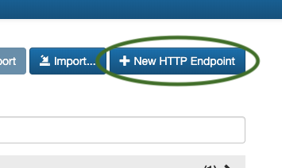
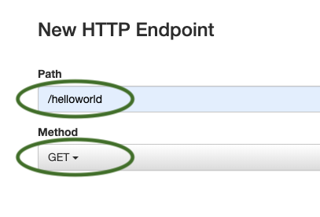
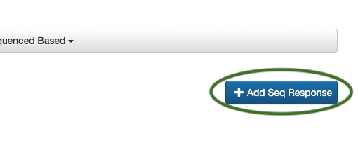
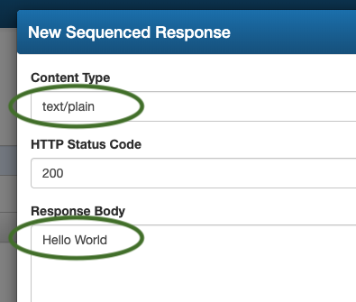
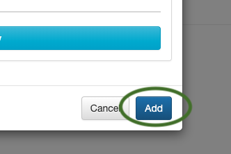
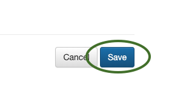

The below example will help you to create a simple
Hello World web service:
1. From the dashboard, click the
+ New HTTP Endpoint button.

2. Enter
"/helloworld" as the
path and select
GET as the
method.

3. Click the
+ Add Seq Response button.

4. Enter
"text/plain" as the
Content Type and
"Hello World" as the
Response Body.

7. Click the
Add button and then lastly the
Save button.

8. Then lastly the
Save button.

9. The new endpoint should now be present on the dashboard
Using
cURL you can access the mocked endpoint like so:
curl -i -X GET http://localhost:8001/helloworld
...or where sMockin is running in
multi user mode and the mock was created by user
joe:
curl -i -X GET http://localhost:8001/joe/helloworld
...or with your favourite HTTP client tool: